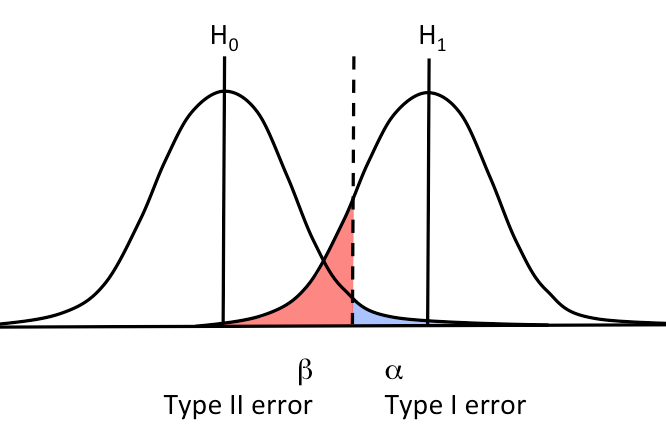
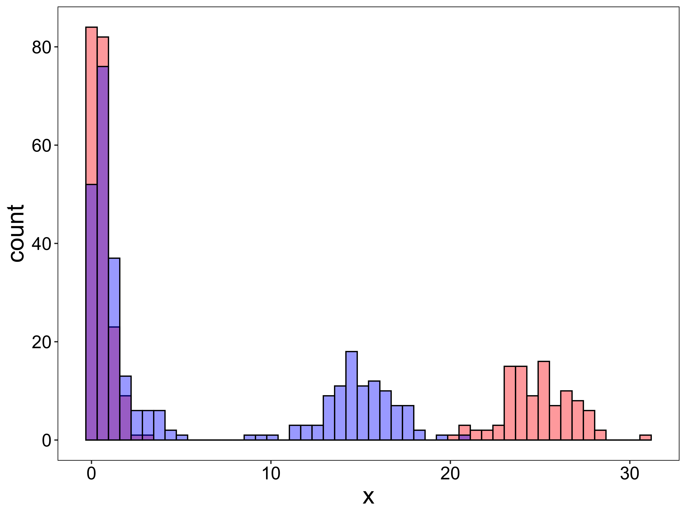
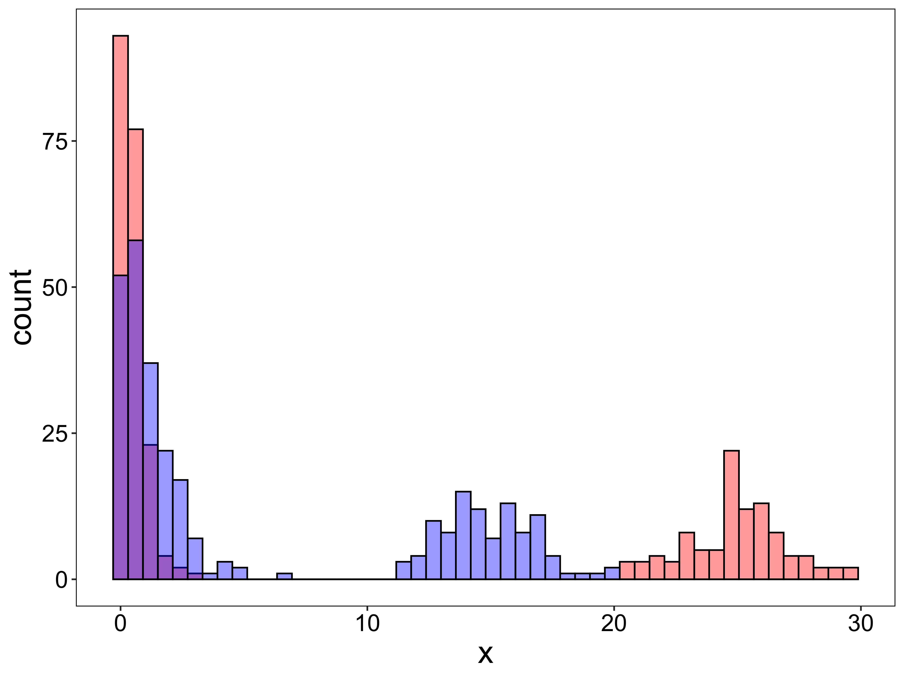
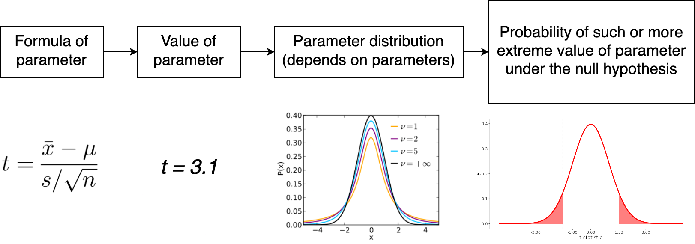
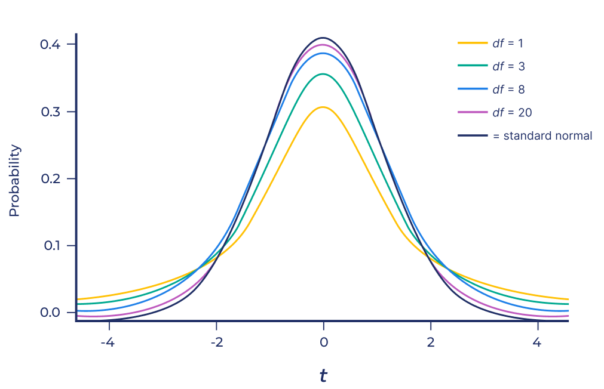
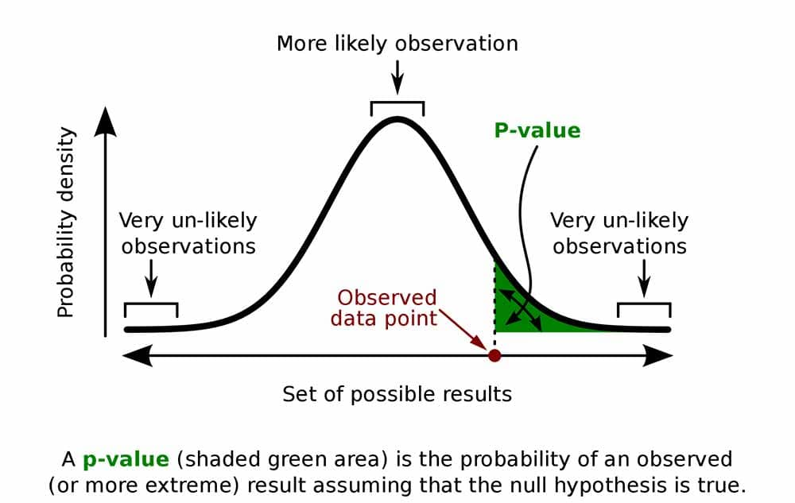
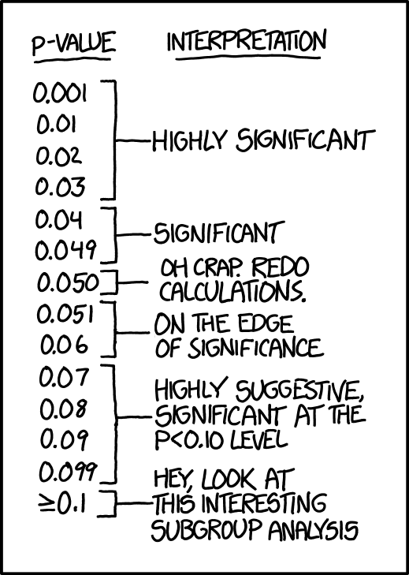
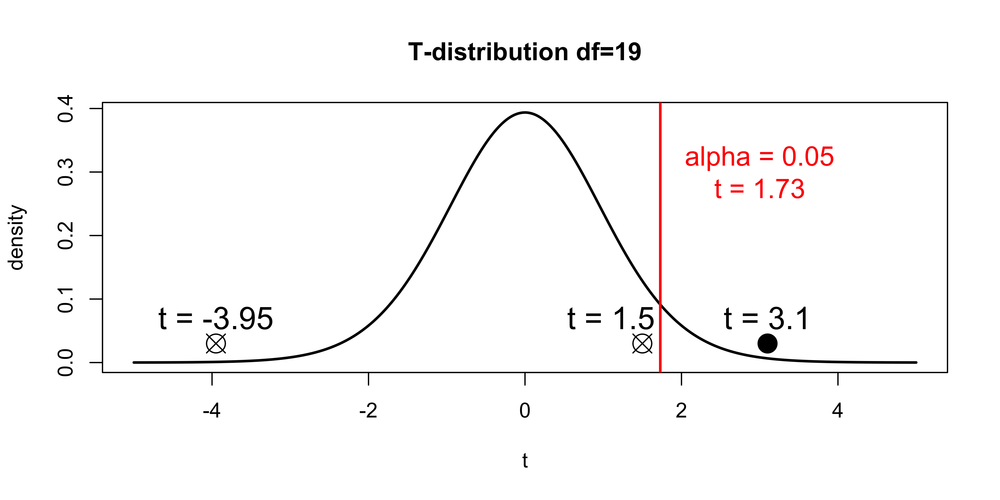
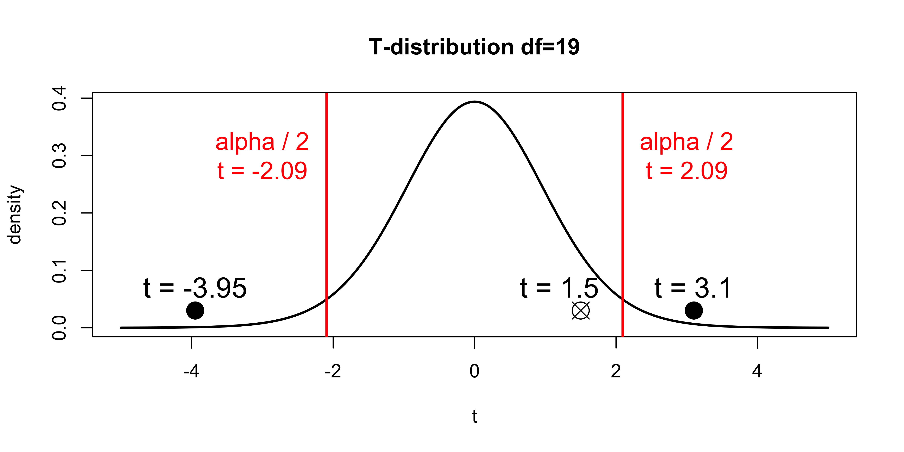
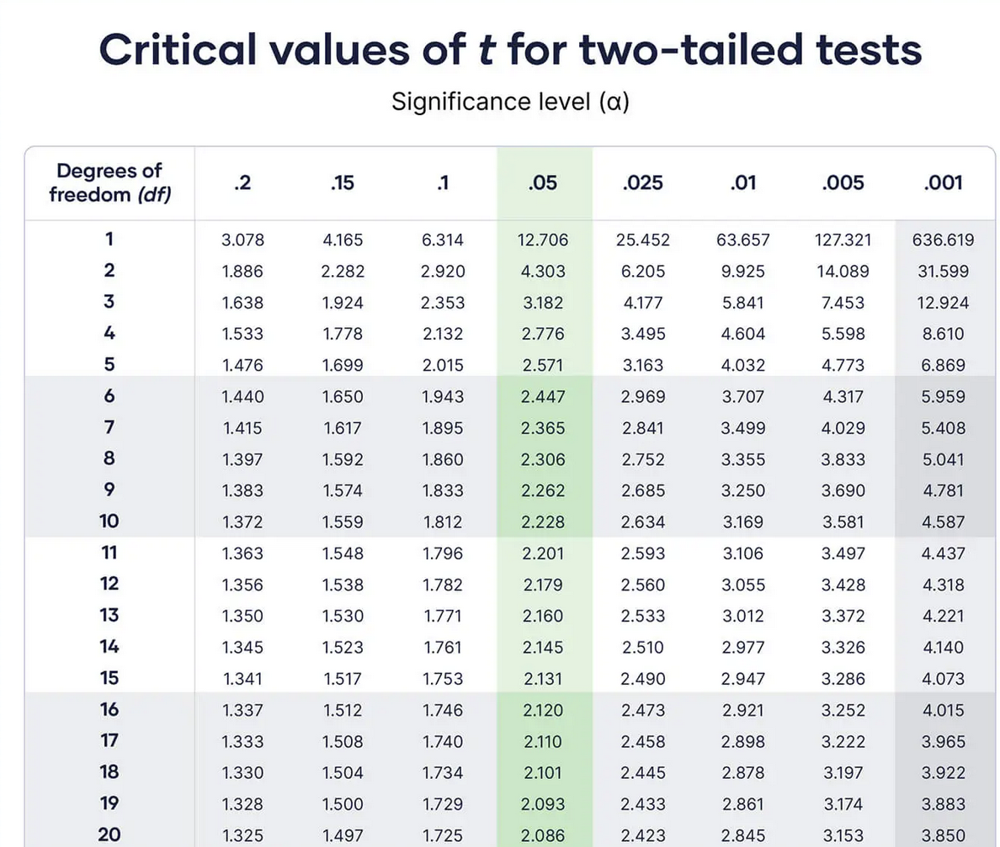

Intro to testing
Basics
Testing plan
1) What we want to test? (Hypotheses about population)
2) Choose significance level
3) Choose the test
4) Conduct the experiment
5) Conduct the test
6) Conclusion
Hypotheses
In statistical testing, we will operate with hypotheses. There are two basic hypotheses:
- Null Hypothesis (\(H_0\)) - There is no effect in population
- Alternative Hypothesis (\(H_A\)) - There is an effect in population
Usually we are interested in having an effect, as it means some discovery, and rejecting null hypothesis
Testing plan
1) What we want to test? Hypotheses
2) Choose significance level
3) Choose the test
4) Conduct the experiment
5) Conduct the test
6) Conclusion
Type I error
Error of rejecting \(H_0\) when \(H_0\) is true
Type II error
Error of accepting \(H_0\) when \(H_0\) is false
| Reality: True | Reality: False | |
|---|---|---|
| Measured: True | Correct 😊 | Type 1 Error |
| Measured: False | Type 2 Error | Correct 😊 |
Probability of Type I error (\(\alpha\))
Probability of Type II error (\(\beta\))

Significance level
Before testing we must define value \(\alpha\) named significance level
Significance level (\(\alpha\)) - predetermined threshold of rejecting \(H_0\).
For example we set \(\alpha = 0.05\) and got p-value < \(\alpha\):
We reject the \(H_0\) at the \(\alpha = 0.05\) significance level, indicating that there is sufficient evidence to conclude that the observed result is unlikely to have occurred under the null hypothesis.
Thus we fix the Type 1 Error , but Type 2 Error still can be large!
The value \(1-\beta\) called the power of the test. The smaller is the probability of type II error, the more powerful is the test.
Significance level
Examples
- Medical/Pharmaceutical: \(\alpha = 0.01\) is common to avoid false positives.
- Psychology/Social: Typically \(\alpha = 0.05\).
- Economics/Business: Sometimes \(\alpha = 0.1\) is acceptable
Testing plan
1) What we want to test? (Hypotheses)
2) Choose significance level
3) Choose the test
Test’s functionality (first)
Test’s assumptions (second)
4) Conduct the experiment
5) Conduct the test
6) Conclusion
Test’s functionality
Does it test my hypothesis?
Is my hypothesis is the hypothesis this test checking?
I’m checking the difference between the average hemoglobin levels in sick and healthy people. T-test should be suitable for this
Test’s assumptions
The conditions, the fulfillment of which ensures control over the quality of the test results
And the opposite is not true !!
For example, fulfillment of assumptions can guarantee fixed Type I error
And if assumptions are violated, it doesn’t mean Type I error will be big
(but it still can be)
T-test is good for big samples with distributions where average makes sense
One data, several hypothesis
- \(X\) - Days in hospital
Divide patients into 2 groups by many days or few (e.g. <>15 days)
Red - with pneumonia
Blue - without pneumonia
\(H_0\) - there’s no association between pneumonia and days in the hospital
\(\Rightarrow \chi^2\) test

One data, several hypothesis
- \(X\) - Students’ exam scores
Red - First group
Blue - Second group
\(H_0\) - Score of students from First group and Second group are the same
\(\Rightarrow\) Mann-Whitney test

Sometimes there is no sutable test for your hypothesis and question
Testing plan
1) What we want to test? (Hypotheses)
2) Choose significance level
3) Choose the test
4) Conduct the experiment
5) Conduct the test
6) Conclusion
Testing plan
1) What we want to test? (Hypotheses)
2) Choose significance level
3) Choose the test
4) Conduct the experiment
5) Conduct the test
6) Conclusion
Test result
The tests result in test statistic and the p-value .
Each test have its formula to calculate called test statistic. This value has its own distribution (e.g. t-distribution for the t-statistic from t-test).
p-value - the probability that, given a true null hypothesis, your observations will result in such or more extreme value of test statistic
The smaller the p-value, the less likely we are to get our result under the null hypothesis, which states that there is no effect.
“Pipeline”

Parameters of test statistics’ distributions
Degrees of freedom!
Often calculated based on number of observations, groups and coefficients.
Determines the shape of distribution!
-> Amount of data affects testing results!
Other parameters…
Mean, SD
Rate, shape
t-distribution for different DFs

p-value calculation

p-value \(\geq \alpha\)
Since the p-value greater than chosen significance level (\(\alpha\)) we fail to reject \(H_0\)
p-value \(< \alpha\)
Since the p-value is less than chosen significance level (\(\alpha\)), we reject \(H_0\) and conclude that there is sufficient statistical evidence to support \(H_A\)

One-sided hypothesis
\(H_A: X_0 < X_1\)

Two-sided hypothesis
\(H_A: X_0 \neq X_1\)

How to calculate critical value of test statistic?
Example for T-distribution
One-sided hypotheses
qt(0.95, df=19)[1] 1.729133qt(0.05, df=19)[1] -1.729133Two-sided hypothesis
qt(0.975, df=19)[1] 2.093024qt(0.025, df=19)[1] -2.093024
Another pitfalls
- Small sample size or Unbalanced groups
- Power of tests will be reduced = less sensible results
- Changing significance level
- \(\alpha\) must be defined BEFORE testing
- Misinterpreting p-values
It doesn’t reject or accept \(H_0\).
YOU reject or accept \(H_0\)
- Multiple comparisons problem
Multiple comparisons
\(1 - 0.05\) - probability of correctly rejected \(H_0\)
\((1-0.05)^n\) - probability of correctly rejected \(\space H_0\) in \(n\) tests
\(1-(1-0.05)^n\) - probability of incorrectly rejected at least 1 \(H_0\) in \(n\) tests
\[ 1 - (1 - 0.05) ^ {2} = 0.0975\\ 1 - (1 - 0.05) ^ {5} = 0.2262191\\ 1 - (1 - 0.05) ^ {20} = 0.6415141\\ 1 - (1 - 0.05) ^ {100} = 0.9940795\\ \]
Multiple comparisons
Corrections!
Controlling the FWER - probability of making at least one Type I error.
Bonferroni
Holm-Bonferroni
Šidák
Controlling the FDR - expected proportion of false positives among all significant tests.
Benjamini-Hochberg
Benjamini-Yekutieli